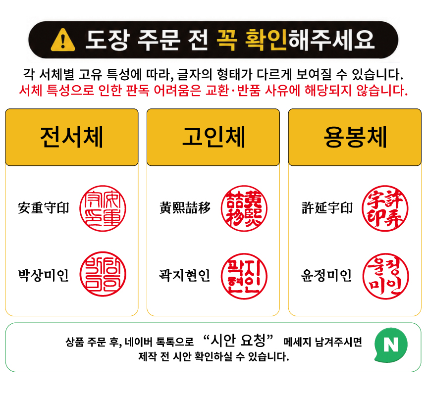

1글자 성씨부터 4글자 직함까지, 가로·세로 모든 배치.
어떤 자음·모음 조합이든 이렇게 찍힙니다.

| 자음 | 도장 샘플 | 모음 | 도장 샘플 |
|---|---|---|---|
| ㄱ | 강유, 강민아 | ㅏ | 강, 아리랑 |
| ㄴ | 노아, 노을빛 | ㅑ | 태양빛(양) |
| ㄷ | 도윤, 도레미 | ㅓ | 박서, 서연 |
| ㄹ | 라온, 아리랑 | ㅕ | 서연, 새벽달 |
| ㅁ | 민준, 자몽향 | ㅗ | 노아, 도윤 |
| ㅂ | 박서, 새벽달 | ㅛ | 자몽향(향) |
| ㅅ | 서연, 푸른산 | ㅜ | 도윤, 주원 |
| ㅇ | 이도, 아리랑 | ㅠ | 강유(유) |
| ㅈ | 주원, 자몽향 | ㅡ | 최은, 노을빛 |
| ㅊ | 최은, 차임종 | ㅣ | 카이, 도레미 |
| ㅋ | 카이 | ㅐ | 태민, 새벽달 |
| ㅌ | 태민, 태양빛 | ㅔ | 도레미(레) |
| ㅍ | 펭수, 푸른산 | ㅝ | 주원(원) |
| ㅎ | 하준, 하늘별 | ㅢ | — |
| ㄲ | 꼬마 | ||
| ㄸ | 또요 | ||
| ㅃ | 뽀요 | ||
| ㅆ | 쑥 | ||
| ㅉ | 찌노 |
| 서체 | 특징 | 추천 용도 |
|---|---|---|
| 전서체 | 둥글고 곡선적, 고전 인장 | 인감·선물도장 |
| 고인체 | 두껍고 정방형, 권위 | 인감·법인·개인이름 |
| 용봉체 | 장식적, 독특한 필치 | 특수·선물·기념 |
1글자~4글자, 가로·세로 모두 가능. 실제 도장 서체로 제작됩니다.